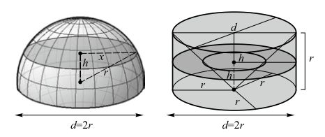

仔细想一想你会发现，利用这个原理，如果把图17a中的半个牟合方盖换成半个球体，利用任意h高度的相应于图17a和17b截面的比值，就可以直接得到球体的体积而不必求助于牟合方盖。这个问题留给读者自己作为练习来做吧。
现在，让我们回到阿基米德最为骄傲的内切圆球的圆柱体问题。让我们采用跟祖氏父子类似的方法，但是把图17a的半个牟合方盖换成半个球体，把右边的半个立方体换成高为r的圆柱。在圆柱内还是挖一个锥形，只不过现在是一个底面半径为r的倒立圆锥。计算一下半圆内高度h处的截面面积和在同等高度h处圆柱在挖出倒立圆锥后剩下的圆环的面积。你得到什么结果（本章习题2）？想象不到吧，你明白阿基米德为什么对这个结果如此骄傲了吗？
祖冲之研究过《九章算术》和刘徽所作的注解，给《九章算术》和刘徽的《重差》作过注解。他们父子还著有《缀术》一书，汇集了父子俩的数学研究成果。《缀术》在唐代被收入国子监算学馆的教本《算经十书》，成为唐代的数学课本。当时学习《缀术》需要四年的时间，可见《缀术》的艰深。《缀术》曾经传至朝鲜和日本。这本书内容过于深奥，以至“学官莫能究其深奥，故废而不理”。所以到北宋时这部书就已经逸失了。人们只能通过其他文献了解祖冲之的部分工作：在《隋书·律历志》中留有一小段祖氏父子关于圆周率的工作；唐代李淳风在《九章算术》注文中记载了他们求球体积的方法。他们还研究过“开差幂”和“开差立”问题，涉及二次方程和三次方程的求根问题。遗留下来的主要数学贡献是对圆周率的计算结果和球体体积的计算公式。
祖暅定理在西方称为卡瓦列利原理，是意大利耶稣军教士、比萨大学数学家卡瓦列利（Bonaventura Francesco Cavalieri，公元1598－公元1647）在1635年提出来的。这比祖氏父子晚了差不多一千二百年。不过，卡瓦列利的概念更为明确，他令人信服地论证，任何三维的物体都可以看成是无数二维平面的叠加。他也是世界上第一位以“积分”的思路来思考三次多项式的人，直接促进了后来微积分学的发展。
中庭多杂树，偏为梅咨嗟。
问君何独然？
念其霜中能作花，露中能作实。
摇荡春风媚春日，
念尔零落逐风飚，徒有霜华无霜质。
鲍照（约公元414—公元466；南朝文学家）：《梅花落·中庭多杂树》
你来试试看？本章趣味数学题：
1.想一想，刘徽怎样利用嘉良斛来检查圆周率的值？
2.把图17a中的半个牟合方盖换成半个球体，把图17b的半个立方体换成高为r的圆柱。在圆柱内挖一个底面半径为r的倒立圆锥（见下图）。计算半球内高度h处的截面面积和在同等高度h处圆柱在挖出倒立圆锥后剩下的圆环的面积。由此计算球体的体积，以及它和圆锥体、柱体体积的关系。
